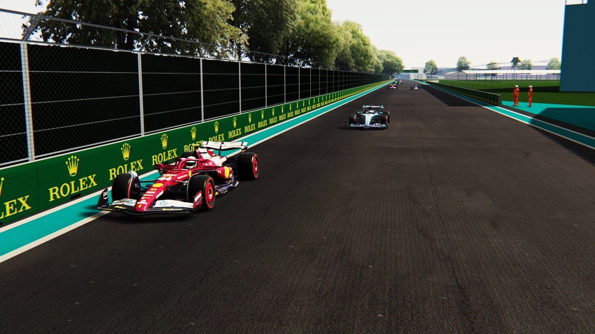

Chaos in the Streets: Javad Wins Wild Six-DNF Thriller as Russell Finally Reaches the Podium
Miami International Autodrome, USA - Round 15 of the 2027 Formula One World Championship
The Miami sun scorched the circuit, but nothing burned hotter than the chaos it witnessed. Six DNFs,
a shock victory, and season-best results reshaped the championship storyline in one of the most
unpredictable races of the year.
🌪️ SIX DNFs - A Race of Survival
Miami became a battlefield early, claiming its first victim on Lap 3 when Lando Norris clipped the
inside wall at Turn 7. The McLaren snapped sideways, leaving him stranded and bringing out an early
yellow.
Just a few laps later, the front-runners began to fall in rapid succession:
Lewis Hamilton, starting from pole, suffered a rare brake failure at high speed. His Mercedes
ploughed straight on into the runoff at Turn 17, ending what looked like a clear win
opportunity.
Max Verstappen, running in the top three, lost control on the slippery offline part of the track.
A snap of oversteer pitched him into the barriers—his second major mistake in as many rounds.
Charles Leclerc then became the next victim. While fighting with Javad for track position, he hit
the harsh Miami kerbs too aggressively, bottoming out and breaking his suspension.
Gabriel Bortoleto followed shortly after. A gearbox glitch locked his rear wheels mid-corner,
spinning his Sauber into the outside wall.
Nico Hülkenberg, who had been running strongly in the midfield, suffered a sudden hydraulics
failure that shut down his car completely.
With the track claiming driver after driver, the grid thinned dramatically—turning the second half of
the race into a survival contest rather than a flat-out sprint.
🏆 Javad Takes Command in the Chaos
Amid all this, Javad kept calm, avoided every incident, and unleashed his pace when it mattered
most. After Hamilton and Verstappen retired, the door opened wide, and Javad stormed through it—building
a comfortable lead and finishing with a controlled, dominant victory.
He also set the fastest lap, solidifying one of his most complete weekends of the season.
🥈 Russell FINALLY Gets His Podium
After 14 rounds of heartbreak, misfortune, and mechanical failures, George Russell finally achieved
his long-awaited first podium of the season, finishing a strong P2.
He kept his cool through all the chaos, managed tire temperatures better than anyone, and brought home a
crucial haul of points for Mercedes. It was, without question, one of his best drives of the year.
⭐ Tsunoda Shines With Best Result of the Season
Yuki Tsunoda delivered an outstanding performance, finishing P4—his highest result this season.
The Japanese driver capitalized on the attrition, but he also showed real pace, defending strongly
against McLaren and Sauber threats.
His consistency is beginning to pay off at a crucial point in the championship.
🏁 Official Race Classification — Miami International Autodrome:
1. Javad (Ferrari) — 16:07.832
2. George Russell (Merecedes) — +08.987
3. Oscar Piastri (McLaren) — +45.571
4. Yuki Tsunoda (RedBull) — +1:19.451
5. Lando Norris (McLaren) — DNF
6. Lewis Hamilton (Merecedes) — DNF
7. Gabriel Bortoleto (Sauber) — DNF
8. Max Verstappen (RedBull) — DNF
9. Nico Hülkenberg (Sauber) — DNF
10. Charles Leclerc (Ferrari) — DNF